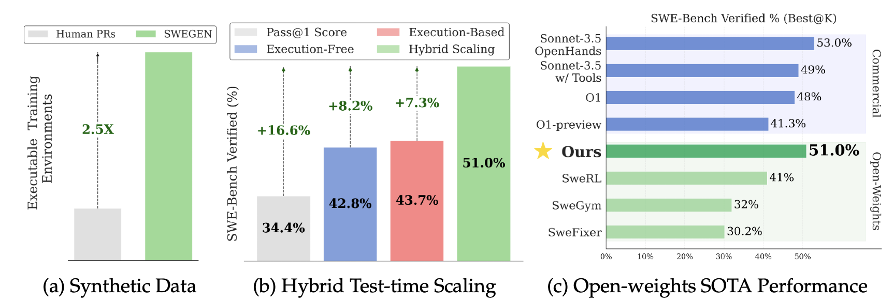

00全景与读法
DeepSWE 是一个反共识样本：主流 SWE agent 训练路线几乎都含 SFT 环节，它却在 Qwen3-32B 上直接纯 RL、零 SFT，用 rLLM 在 R2E-Gym 的 4,500 个真实软件工程任务上训练 64 张 H100 × 6 天，稀疏结果奖励（补丁过测试才给分），最终 SWE-bench Verified Pass@1 42.2%。它之所以值得精读，不在于榜单时效——2025-07 的快照早已被后续工作刷新——而在于三件事：一份经 6 天大规模训练验证的长程 agentic RL 配方（GRPO++）、一个把 Episode ⊃ Trajectory ⊃ Step 显式建模的通用框架（rLLM），以及一组必须分开读的分数（42.2 / 71.0 / 59.0）。本文按原文七节重组，每节先给朴素基线，再给它的做法，最后落一句本站判断。
每一节固定三段：朴素基线（左栏，灰：不看这套工作时的直觉实现）/ 它的做法（右栏，橙：DeepSWE / rLLM 的实际选择）/ 差在哪（下方色块：差异、原文是否给了理由、对 RL-on-NPU 的含义）。数字按来源分三类：第三方 独立测量或多方一致、自报 作者或官方口径、推断 本站分析。原文全部分数为官方或媒体口径，未经本看板独立复测，本文一律保留 provisional 限定。
贯穿全文的一条线索：长程多步任务使 RLHF 时代的默认正则项全部变为负面因素。GRPO++ 的每一项改动都是减法；rLLM 的三层抽象是为了让奖励挂在 Episode/Trajectory 级、梯度落在 Step 级；Model Gateway 捕获 token IDs 与 logprobs 是训推一致性的第一现场。三者合在一起，就是本看板 align-probe 思路在开源栈里的现成落点。
01命名消歧：此 DeepSWE 非彼 DeepSWE
先做一个必要的消歧，因为同名会造成实质性误读：datacurve.ai 也发布过一个名为 "DeepSWE" 的项目，那是一个抗污染评测基准——包含 113 题，榜首是 GPT-5.5（70%）。而本文所指的 DeepSWE 是 Agentica × Together AI 在 2025 年 7 月发布的模型 + RL 训练栈（HF：agentica-org/DeepSWE-Preview）。前者是评测基准，后者是被训练的模型及其训练系统，二者完全不同。若检索时看到"DeepSWE 上 GPT-5.5 排第一"之类的说法，指的是 datacurve 的评测基准，与本文无关。

这张图怎么读
先看虚线：从模型线中的 DeepSWE-32B 引出的虚线指向消歧框，说明本文讨论的是模型线上 2025-07 的那一个节点，而非整条线的最新状态。模型线四个节点的时间跨度是 2025-02 到 2026-02，每个节点的对比对象都是"当时模型"（超 O1-Preview、O3-mini 级、比肩 Gemini 2.5 Pro），读数时不应把它们放在同一时刻的坐标上比较。
再看框架线只有两个节点：v0.2（2025-10，主题为 "RL Training for General Agentic Programs"）与 v0.3.0-pre（2026-04-30）。原文明确未深查 v0.3 的 API 变化——这条线上的空白正是下一步要看的东西。消歧框内两个条目之间只有一条"互不相关"的虚线，没有任何数据流，这是刻意的：两者共享的只有名字。
朴素基线
按名字检索，把"DeepSWE 榜单"上的分数（GPT-5.5 70% 居首）与 DeepSWE 模型的 42.2% 放进同一张表；或把"DeepSWE 被 GPT-5.5 超越"理解为 Agentica 模型被超越。
它的做法
第三方 datacurve.ai 的 DeepSWE：抗污染评测基准，113 题，榜首 GPT-5.5（70%）。自报 Agentica 的 DeepSWE：被训练的模型（agentica-org/DeepSWE-Preview）及其背后的 rLLM 训练系统。以下所有内容均指后者。
差在哪一个是考卷，一个是考生与训练它的系统，两者没有任何交集。原文将消歧放在第一节，是因为此错误在检索阶段就会发生，且会直接污染后面的分数表。本站判断：凡引用 "DeepSWE xx%" 的材料，第一步应确认它指的是基准还是模型，第二步再确认是哪一个口径（见第 05 节）。
02rLLM：从 DeepSWE 的训练系统到通用 agentic RL 框架
rLLM 出自 Agentica 团队（Berkeley Sky Computing Lab），Apache-2.0 开源，与 Together AI 研究合作，支持方包括 Laude Institute、AWS、Hyperbolic、Fireworks、Modal。它的定位表述十分直接："Agentic RL on any harness, with any backend, on any benchmark"——任意 agent 脚手架、任意训练后端、任意基准。版本演化线值得注意：v0.2（2025-10）的主题是 "RL Training for General Agentic Programs"，即从"训一个编码 agent 的专用系统"泛化为"训任意 agentic 程序的通用框架"；v0.3.0-pre 已于 2026-04-30 发布（具体 API 变化原文未深查）。从这条主题演化线可以合理推断：rLLM 先是服务于 DeepSWE 这类具体模型训练的系统，之后才泛化成通用框架——若确实如此，这个演化顺序也解释了它的抽象为什么天然贴合多步 agent。

这张图怎么读
这张图有两条应当分开看的链路。纵向数据流：Workflow Engine → Model Gateway → Transform Pipeline → AgentTrainer → 后端，每一条边上标了传递物——"每次 LLM 调用经由 Gateway"、"带 logprobs 的完整轨迹"、"分组后的训练批次"。最值得停留的是第二条边：轨迹从 Gateway 出来时已经附带推理侧的 token IDs 与 logprobs，Transform Pipeline 拿到的是第一现场数据，而非事后重算的近似。
横向抽象层：左上的三层数据结构以一条虚线"统一数据结构贯穿全流程"连到组件区。这条虚线说明三层抽象不是某个组件的私有格式，而是所有组件共用的接口——这正是信用分配、轨迹分组、advantage 广播能有清晰挂载点的原因。最下方后端框到"评测即插即用"的虚线，则表示基准集成与训练后端是解耦的：换后端不必换评测。
三层抽象：Episode ⊃ Trajectory ⊃ Step。一个 Episode 是一个任务；一条 Trajectory 是一次完整的 agent 运行；一个 Step 是一次 LLM 调用。这一层级的重要性在于：多步 agent 的 RL 与单轮 RLHF 的本质区别是，奖励挂在 Episode/Trajectory 级，而梯度要落到 Step 级的每个 token 上。显式建模这三层之后，信用分配、轨迹分组、advantage 广播才有清晰的挂载点，而非像单轮框架那样将多轮对话强行压缩为一个 prompt-response 对。
Model Gateway：训推一致的第一现场。Gateway 负责路由所有 LLM 请求，并在推理时捕获 token IDs 和 logprobs。agentic RL 最隐蔽的 bug 来源是训练引擎与推理引擎对同一段文本的 tokenization / logprob 不一致（采样时是一个分布，回传梯度时按另一个分布算 importance ratio）。在网关层把推理侧的 token IDs 和 logprobs 原样捕获下来，就是训推一致性检查（本看板一直强调的 align-probe 思路）的天然探针位——无需事后重算。
其余组件各司其职：Workflow Engine 并行跑 N 个 agent 实例收集 rollouts（组采样的物理执行层）；Transform Pipeline 把轨迹分组、做 advantage 计算（GRPO 的组内归一化就发生在这里）；AgentTrainer 类封装训练循环，配合 @rllm.rollout / @rllm.evaluator 装饰器，将用户自己的 agent 逻辑和评测逻辑接入框架。后端可插拔：verl（分布式多 GPU）、tinker（单机）、fireworks（平台托管）三档。算法覆盖 GRPO、REINFORCE、RLOO、SFT、on-policy distillation；基准集成 60+，含 Terminal-Bench 2.0、SWE-bench、SkillsBench、AIME、MATH-500、GPQA 等。
朴素基线
沿用单轮 RLHF 框架：把多轮对话拼成一个 prompt-response 对，奖励与梯度都挂在这一对上；训练时对采样文本重新前向一遍算 logprob；agent 逻辑、rollout 编排与训练引擎写在同一套代码里，换后端等于重写。
它的做法
自报 Episode ⊃ Trajectory ⊃ Step 三层显式建模，奖励挂 Episode/Trajectory 级，梯度落 Step 级 token；Model Gateway 在推理时原样捕获 token IDs + logprobs；Workflow Engine / Transform Pipeline / AgentTrainer 各司其职，@rllm.rollout / @rllm.evaluator 装饰器接入用户逻辑；后端 verl / tinker / fireworks 可插拔；算法五种、基准 60+。
差在哪差异在于把"多步 agent"作为一等公民建模，而不是单轮框架的补丁。原文给出的理由是结构性的：奖励与梯度所在的层级不同，不显式建模就没有信用分配的挂载点。后端可插拔与 D18 的 SkyRL-Agent"后端无关"哲学同源——两者同属 Berkeley 系，共享一个判断：agent 逻辑、rollout 编排与训练后端应该解耦。本站判断：Gateway 捕获 logprob 这一设计的价值常被低估，它是 NPU 上做训推对齐检查的现成探针位（第 07 节展开）。60+ 基准的覆盖面意味着它不只是"复现 DeepSWE 的脚本"，而是可以直接换任务、换算法开新实验的底座。
03DeepSWE：纯 RL、无 SFT 的三个先决条件
主流的 SWE agent 训练路线几乎都有 SFT 环节：或先蒸馏冷启动再 RL（D12 梳理过的分步清单），或采用 SFT-only 路线（D14 的 ScaleSWE：71k 轨迹蒸馏 SFT，不碰 RL）。DeepSWE 反其道而行：在 Qwen3-32B 上直接纯 RL，零 SFT——用 rLLM 在 R2E-Gym 的 4,500 个真实软件工程任务上训练，64 张 H100 × 6 天，稀疏结果奖励（补丁过测试才给分）。这条反共识路线之所以可行，依赖三个缺一不可的条件：

这张图怎么读
要看的是没有画出来的东西：基座到策略模型之间没有 SFT 节点，闭环内没有 reference model、没有过程奖励模型、没有 critic——整个闭环只有四个节点（策略 → 环境 → 稀疏奖励 → 参数更新）。这是"做减法"哲学在系统层面的直接体现，与第 04 节 GRPO++ 去 KL、去熵正则的算法层减法一一对应。
闭环右侧那条从结果指向"方法与栈不过时"的虚线，是原文对时效的自我限定：42.2% 是当时开源权重 SOTA（官方口径），分数与基座已被后续工作刷新，但闭环本身的结构不随快照过期。读这张图时，把它当作一份"最小可行 agentic RL 闭环"的示意，而非榜单。

这张图怎么读
这张表回答的是第 03 节"条件 2"：R2E-Gym 作为环境本身是否有效。看 Verified 一组的最右列 Δ：7B +8.4、14B +10.4、32B +13.8，同一环境上的增益随模型规模单调放大；32B 行基座只有 7.0（±1.3），用 R2E-Gym 训练后到 34.4（±1.2）。括号内的标准差在 1–2 分量级，说明增量远大于噪声。
但必须注意口径边界：此表是 R2E-Gym 论文中的 SFT 结果（表头 Ours 指 R2E-Gym 数据），基座与 DeepSWE 所用的 Qwen3-32B 不同，34.4 与 DeepSWE 的 42.2 不是同一实验、不可相减。它对本文的意义只有一条：DeepSWE 选择的 4,500 个任务来自一个已被独立实验证明"可执行、测试可判、训练有增益"的环境——这正是稀疏奖励不被噪声污染的前提。
成本量级的意义：64 H100 × 6 天，折合约 9,200 GPU 时（64 × 24 × 6 ≈ 9,216），这是学术实验室和中型团队可以承受的量级——不是预训练那种千卡月级投入。全开源（模型 + 代码 + 配方，repo 内有 reproduction/DEEPSWE_REPRODUCTION.MD）加上这个成本档位，正是 D12 把 DeepSWE 栈评为"阻力最小起点"的原因。
对"稀疏结果奖励是否属于真正的 RL"这一常见疑问的回应：属于，而且是标准形态。DeepSWE 是真交互式 agentic RL：agent 在环境里在线 rollout（读代码、改文件、跑测试，多步交互），用策略梯度更新。稀疏结果奖励只是信用分配谱系（D08）里最朴素的一档——不做过程奖励、不做步级打分，让组内对比（GRPO 的相对 advantage）隐式完成信用分配。朴素不等于不是 RL；恰恰相反，这是最不容易被 reward hacking 的一档。
朴素基线
先用教师模型蒸馏一批轨迹做 SFT 冷启动，再上 RL；或干脆只做 SFT（ScaleSWE 路线）。理由是纯 RL 在长程任务上会长期零奖励，且稀疏 0/1 奖励"信息太少"。
它的做法
自报 Qwen3-32B 直接纯 RL，零 SFT；R2E-Gym 4,500 个真实任务，补丁过测试才给分；64 H100 × 6 天 ≈ 9,216 GPU 时；模型、代码、配方、复现文档全开源。推断 可行性依赖三个条件同时成立：基座够强、奖励信号干净、算法稳定化。
差在哪差异不在"用不用 RL"，而在"RL 之前要不要先教一遍"。原文给出的理由是条件式的：基座已具备工具使用能力，RL 只需对齐到任务分布。这意味着纯 RL 路线的可复制性取决于三个条件是否同时满足，而非配方本身——换一个更弱的基座，结论可能反转。本站判断：9,216 GPU 时的成本档位是本篇对 RL-on-NPU 最有操作性的数字，它划定了"单节点到小集群"可及的范围；稀疏结果奖励是最朴素也最抗 reward hacking 的一档，对国产栈上首次跑通 agentic RL 闭环而言，正是应当先选的一档。
04GRPO++ 逐项拆解
GRPO++ 是 DeepSWE 提出的稳定化 GRPO 变体，每一项都对应长程 agentic 场景下的一种具体问题。共同主线：长程多步任务使 RLHF 时代的默认正则项全部变为负面因素——它们都是为单轮短序列设计的。GRPO++ 的哲学是做减法，只保留能在长 horizon 下自洽的部分。

这张图怎么读
图的两个框有来源级别的差异：上框三项是 DeepSWE 官方口径的"主要改动"，下框四项是本看板在 D12 / D13 中记录的配套配置。读数时不要把七项等量齐观——若只能保留三项，应是上框。每一项右侧的"针对"节点是读图的关键：它把改动从"调参"翻译成"病理"，例如 compact filtering 针对的是截断轨迹的错误信用回传，去归一化针对的是稀疏奖励下"全对 / 全错"组的病态缩放。
七条线汇入同一个终点，而不是各自指向一个分数指标，这一画法本身就是结论：GRPO++ 的目标函数是稳定性而非单步性能。左侧 GRPO 基线节点的注释"免价值网络"提示了另一层含义——去掉 critic 之后，组采样的多样性（8–16 条）成为探索的唯一来源，这也是 entropy-free 能成立的前提。
朴素基线
照搬 RLHF 时代的 GRPO / PPO 默认配置：熵正则防坍缩、KL 惩罚贴住参考策略、组内奖励做标准差归一化、截断轨迹按失败计负 advantage、对称裁剪。
它的做法
自报 官方三项：compact filtering、去奖励归一化、entropy-free。第三方 D12 / D13 记录的配套口径：clip-higher、无 KL 惩罚、长度归一化、组采样 8–16。全部为减法或放宽，没有新增任何正则项。
差在哪差异是"默认正则项在长 horizon 下是否仍然自洽"。原文给了每一项的病理解释，但未给逐项消融的数字——哪一项贡献最大、去掉哪一项会失稳，原文没有说。本站判断：这是目前长程 agentic RL 稳定性上验证最充分的公开配方（6 天大规模训练）；换硬件平台不改变这些算法层面的病理，这也是 D13 的昇腾方案完整采用 GRPO++ 的原因。compact filtering 与 D13 的"截断给 0 分不丢弃"是同一问题的两种取舍，昇腾上长 rollout 更容易被截断，这一项的取舍需要在 NPU 上单独验证。
05混合 test-time scaling：17 分增量的来源
DeepSWE 的三个分数要分开读（均 provisional）：Pass@1 = 42.2%，Pass@16 = 71.0%，混合 TTS = 59.0%（SWE-bench Verified）。Pass@16 高达 71% 说明：对大多数任务，正确解已经在采样分布里——16 次采样中大概率至少有一次正确。瓶颈不在模型能力，而在筛选环节。混合 test-time scaling 针对的正是这个选择问题：最多采 16 条 rollout，再用一个 verifier LLM 从中挑选最可能正确的补丁，最终落在 59.0%，比 Pass@1 提升约 17 分。verifier 未能覆盖 Pass@16 的全部空间（59 < 71），说明"判断哪个补丁正确"本身也是一个未解难题，但 17 分的增量已经证明：在 agentic 编码任务上，采样 + 验证的 test-time 计算换分数，性价比极高。

这张图怎么读
三个数字排成一条链，但不是一条单调的链：42.2 → 71.0 是能力上限的扩张（多采样），71.0 → 59.0 是筛选的损失（verifier 没挑对）。真正可交付的是 59.0，中间的 71.0 是一个"oracle 挑选"下的假想分数。图中 Pass@16 节点到 verifier 的虚线注释"这是能力上限，不是可交付分数"，是整张图的读法核心。
两段差值各自对应一个研究方向：42.2 与 71.0 之间的 29 分说明采样多样性充足，模型侧不是瓶颈；71.0 与 59.0 之间的 12 分是 verifier 的缺口——原文将它列为 test-time scaling 研究里最明确的目标，补丁验证能力的提升可直接转化为两位数的分数增益。

这张图怎么读
只看中间面板 (b)。它解释了 DeepSWE"混合 TTS"里"混合"二字的来历：两种 verifier 各自只能带来 7–8 分，叠加后是 16.6 分——execution-free（LLM 评审补丁）与 execution-based（跑测试）看到的错误类型不同，互补性大于重叠。纵轴是 SWE-Bench Verified，四根柱子从左到右是 Pass@1 → 单一 verifier → 混合，柱顶虚线箭头标注的增量是读图重点。
与图 6 并置：R2E-Gym 论文上是 34.4 → 51.0（+16.6），DeepSWE 上是 42.2 → 59.0（约 +17）。两个起点不同的模型，同一种筛选机制带来几乎相同的绝对增量——这提示 verifier 增益在这一区间内大致独立于基座能力（本站推断，原文未做此比较）。面板 (a) 与 (c) 与 DeepSWE 无直接关系，(c) 的对比对象是 2025 年初的模型，不应与 2026 年的榜单并读。
朴素基线
报一个分数：取 Pass@1 作为模型能力，或取最高的那个数字作为"DeepSWE 的分数"；把 59.0 与其他模型的 Pass@1 并排。
它的做法
自报 三个分数分开报：Pass@1 42.2（单次推理的模型能力）、Pass@16 71.0（采样分布的能力上限）、混合 TTS 59.0（16 倍推理开销 + verifier 的系统能力）。verifier 挑选带来约 17 分；与上限的差 12 分是筛选损失。
差在哪差异是"模型能力"与"系统能力"两个口径。42.2 和 59.0 不可混报：前者是单次推理，后者叠加了 16 倍推理开销 + verifier。看到任何 "DeepSWE 59%" 的说法，应注意那是 TTS 口径；与其他模型的 Pass@1 直接并排比较是不公平的——反之亦然。本站判断：这一节对 RL-on-NPU 的含义在推理侧：16 条并行 rollout + verifier 是纯推理负载，与训练集群解耦；若国产栈的推理引擎能稳定跑 16 路采样，17 分的增益是"零训练"可得的。verifier 的 12 分缺口则是与硬件无关的研究目标。
06效果与生态位（provisional）
下表把 DeepSWE 的三个口径与本看板此前记录的同类工作放在一起。所有数字均为官方或媒体口径，未经独立复测。
| 方法 | 基座 | 路线 | SWE-bench Verified | 口径 |
|---|---|---|---|---|
| DeepSWE-32B | Qwen3-32B | 纯 RL，无 SFT | 42.2% | Pass@1（provisional） |
| DeepSWE-32B | Qwen3-32B | 同上 + 采样 16 | 71.0% | Pass@16（provisional） |
| DeepSWE-32B | Qwen3-32B | 同上 + verifier TTS | 59.0% | 混合 TTS（provisional） |
| SA-SWE-32B（SkyRL-Agent，D18） | Qwen3-32B | 纯 RL（24.4 → 39.4） | 39.4% | Pass@1（provisional） |
| ScaleSWE（D14） | Qwen3-30B | 蒸馏-SFT-only（71k 轨迹），无 RL | 64% | 官方口径（provisional） |
| Kimi-Dev（D12） | — | Agentless 先验 + RL | 60.4% | 官方口径（provisional） |
朴素基线
把表中的 Verified 一列按大小排序，得出"蒸馏 / 先验路线（64、60.4）优于纯 RL（42.2、39.4）"，进而认为纯 RL 是次优路线；或把 DeepSWE 与 ScaleSWE 看作竞争关系。
它的做法
自报 开源纯 RL 带在约 40%：DeepSWE 42.2 与 SA-SWE-32B 39.4 同基座、同路线，落在同一水位；蒸馏 / 先验路线在 60%+。推断 两个带不可直接比：蒸馏路线的分数含教师能力转移，纯 RL 的分数是通过环境交互从基座能力中提取的——回答的是不同的科学问题。
差在哪差异在于把分数表读成排行榜，还是读成两条不同路线各自的水位线。原文的判断是组合而非替代：DeepSWE 提供可复现的 agentic RL 训练栈，ScaleSWE 提供大规模 SFT 轨迹数据，最自然的组合是 SFT 冷启动 + rLLM/GRPO++ 继续 RL——两条路线在实践中是上下游关系。本站判断：快照已旧，栈不过时。DeepSWE 是 2025-07 的快照，基座与分数早已被后续工作刷新（Agentica 自己的模型线也走到了 2026-02 的 rLLM-FinQA-4B——金融分析上超 235B 模型、比肩 Gemini 2.5 Pro，前序还有 DeepScaleR-1.5B 超 O1-Preview、DeepCoder-14B 达 O3-mini 级，对比对象均为当时模型），但作为方法论 + 全开源完整度（模型、代码、数据配方、复现文档俱全），DeepSWE 栈仍是自行实践 agentic RL 的入门首选，D12 的推荐不需要修改。
07对 RL-on-NPU 的意义
回到本看板的主线关切：这套体系对昇腾 / NPU 上的 RL 实践意味着什么。原文给出四条，本站按"零成本 / 工程成本 / 未知成本"三档重排。
朴素基线
把 DeepSWE 视为一个 GPU 上的成品：要在昇腾上复现，等于把整套代码（含 verl 后端）移植到 NPU，训推一致性问题留到出现后再调试，算力按卡数线性折算。
它的做法
自报 DeepSWE 的最大输出物是一份经 6 天大规模训练验证的长程 agentic RL 超参与算法配方，与硬件无关；rLLM 抽象边界已画好，后端只是可替换的执行引擎；Gateway 在网关层留存推理侧第一现场数据。推断 换算到昇腾需考虑单卡有效算力折扣、互联带宽对 rollout 并行的影响、vLLM-Ascend 等推理引擎的成熟度；原文明确不作数字估算。
差在哪差异在于把迁移拆成三层，而非整体移植。算法层迁移成本为零（D13 已采纳）；架构层缺口纯粹是适配层由谁实现的工程问题，而非框架重构——这比 slime 那种 SGLang 原生深度绑定的生产栈（D19）在移植面上更友好，代价是缺少垂直整合带来的极致吞吐。本站判断：NPU 上训推一致性风险比 GPU 更高（算子实现、精度路径都可能不同），rLLM 在网关层捕获 token IDs + logprobs 的设计正好提供了做训推对齐检查的第一现场数据，把本看板的 align-probe 思路挂在 Gateway 上几乎是现成的。真正的先决条件是前两条已满足，剩下的是工程投入；算力倍率取决于集群与软件栈状态，本文不给数字。
08总表：朴素基线 vs 它的做法
| 主题 | 朴素基线 | 它的做法 · 差在哪 |
|---|---|---|
| 命名 | 按名字检索，混入 datacurve 基准的分数 | datacurve DeepSWE = 113 题抗污染基准（GPT-5.5 70% 居首）；本文 DeepSWE = agentica-org/DeepSWE-Preview 模型 + rLLM 栈。同名不同物 |
| 框架抽象 | 单轮 RLHF 框架，多轮压成一个 prompt-response 对 | Episode ⊃ Trajectory ⊃ Step 显式三层；奖励挂 Episode/Trajectory 级，梯度落 Step 级。信用分配有挂载点 |
| 训推一致 | 训练时重算 logprob | Model Gateway 在推理时原样捕获 token IDs + logprobs。align-probe 的第一现场 |
| 后端 | agent 逻辑与训练引擎耦合 | verl / tinker / fireworks 可插拔；与 D18 SkyRL-Agent 同源哲学。加 Ascend 后端是适配层问题 |
| 训练路线 | SFT 冷启动再 RL，或 SFT-only | Qwen3-32B 纯 RL 零 SFT；R2E-Gym 4,500 任务；64 H100 × 6 天 ≈ 9,216 GPU 时。可行性依赖基座、奖励、算法三条件 |
| 奖励 | 过程奖励 / 步级打分 | 稀疏结果奖励（补丁过测试才给分），组内对比隐式完成信用分配。最朴素、最抗 reward hacking 的一档 |
| 算法 | RLHF 默认：熵正则、KL、奖励归一化、截断计负 | GRPO++ 全为减法：compact filtering、去归一化、entropy-free（官方三项）+ clip-higher、无 KL、长度归一化、组采样 8–16（D12/D13 口径）。无逐项消融 |
| 分数口径 | 报一个数 | Pass@1 42.2 / Pass@16 71.0 / 混合 TTS 59.0 分开读；verifier 挑选 +17，筛选损失 12。42.2 与 59.0 不可混报 |
| 生态位 | 按分数排序，纯 RL 次优 | 纯 RL 带约 40%（42.2 / 39.4），蒸馏带 60%+（64 / 60.4）；两带回答不同问题。SFT 冷启动 + rLLM/GRPO++ 是上下游组合 |
| 对 NPU | 整体移植，算力线性折算 | 算法层零成本（D13 已采纳）、架构层工程成本（后端接口已有）、算力换算未知（不作估算） |
09原文没给的东西与未能核实的东西
以下是复现时必须自行确定、原文未给理由、或未经独立复现的条目——引用时应保留限定语：
- GRPO++ 逐项消融：原文给了每项改动的病理解释，但没有给出去掉任一项后的稳定性或分数变化；哪一项贡献最大无法从原文判断；
- compact filtering 的过滤比例：被截断轨迹占样本的比例、过滤后有效样本量的下降幅度，原文未给；这直接决定与 D13"截断给 0 分不丢弃"取舍的优劣；
- clip-higher 的具体上界、长度归一化的具体形式、组采样取 8 还是 16：仅有 D12 / D13 记录的口径范围，无精确数值；
- verifier LLM 的具体型号、评审 prompt 与是否含执行反馈：原文只说"一个 verifier LLM 从中挑选最可能正确的补丁"；图 7 显示 R2E-Gym 论文用的是 execution-free + execution-based 混合，DeepSWE 是否沿用同一组合未在原文确认；
- rLLM v0.3.0-pre 的 API 变化：原文明确未深查；若涉及 Gateway 或后端接口重构，直接影响"加 Ascend 后端"的工程评估；
- "rLLM 先服务 DeepSWE、后泛化为通用框架"的演化顺序：原文标注为合理推断，非官方陈述；
- 三个分数（42.2 / 71.0 / 59.0）：官方或媒体口径，未经本看板独立复测；SA-SWE-32B 39.4、ScaleSWE 64、Kimi-Dev 60.4 同样为 provisional；
- DeepScaleR / DeepCoder / FinQA 的对比结论（超 O1-Preview、O3-mini 级、比肩 Gemini 2.5 Pro）：对比对象均为发布当时的模型，官方口径；
- 昇腾算力换算倍率：原文定性为"量级可及但周期拉长"，不作数字估算；
- 本文原图受限于网络代理可达性：rLLM 仓库 README 无配图，两张原图取自 R2E-Gym 官方仓库，均为 R2E-Gym 论文而非 DeepSWE 的实验数字，已在图注中标明口径边界；DeepSWE 官方博客与 HF 页面配图未能获取。
一、长程 agentic RL 的稳定化是做减法。GRPO++ 的七项改动没有一项是新增正则，全部是去除或放宽为单轮短序列设计的默认项。换硬件平台不改变这些算法层面的病理——这是 D13 昇腾方案直接采纳 GRPO++ 的依据，也是国产栈上首次跑通 agentic RL 时不应"补回"熵正则与 KL 的理由。
二、三个分数是三个口径，verifier 的价值是 17 分。Pass@1 是模型能力，Pass@16 是采样上限，混合 TTS 是系统能力。正确解已在分布内，瓶颈在筛选；16 路采样 + verifier 是纯推理负载，与训练集群解耦，对推理引擎已就绪的国产栈是零训练可得的增益。
三、rLLM 的接口边界已画好，Gateway 是探针位。后端可插拔意味着加 MindSpeed / Ascend 后端是适配层工程而非框架重构；Gateway 捕获推理侧 token IDs + logprobs，正是 NPU 上训推一致性检查的第一现场。先做零成本的算法层与探针层，再投入工程成本的后端层。
rLLM v0.3 的 API 变化——v0.3.0-pre 已于 2026-04-30 发布，若涉及 Gateway 或后端接口重构，直接影响"加 Ascend 后端"的工程评估，值得跟进一篇 · verifier 的 12 分缺口——Pass@16 71% 对混合 TTS 59% 之间的挑选损失，是 test-time scaling 研究里最明确的目标，补丁验证能力的提升可直接转化为两位数的分数增益 · 纯 RL 带能否突破 40%+——DeepSWE 42.2 与 SA-SWE-32B 39.4 划出的开源纯 RL 水位线，下一个刷新它的工作会揭示瓶颈在算法、环境规模还是基座 · rLLM 上 Ascend 后端的实现动向——关注社区或厂商是否出现 MindSpeed / vLLM-Ascend 适配的实际 PR，这是把本篇结论从"理论可行"推进到"实测数据"的关键一步。